The Game
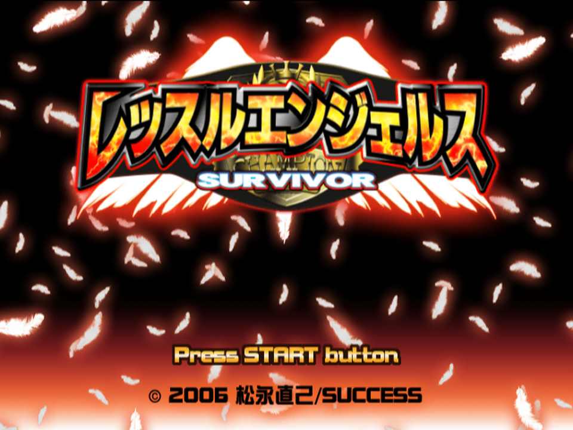
Wrestle Angels Survivor (レッスルエンジェルス サバイバー, Ressuru Enjerusu Sabaibā) is a women's pro-wrestling management game published by Success for the PlayStation 2 in 2006. It was released only in Japan. This guide was written alongside the English fan translation, so every name and menu label is the one the translation shows.
What sets it apart:
- You run the promotion, not the wrestler. Scout and sign wrestlers, train them, book shows in halls across Japan's 47 prefectures, create belts, and outlast up to four rival promotions until the Final Series decides the strongest. See Management.
- Matches are a card game. Each exchange, both corners play a card; the higher score wins and only the winner's move happens. There's no dice roll in it, and the rules are simple enough to work out by hand. See How a Match Works.
- A roster of 206 wrestlers, 52 of them "2P" alternates, with voiced lines, finishers and their own scenes. All of them can be played in the exhibition modes from the start. See The Roster.
- Up to four players can run rival promotions in the same game, and two can play a match against each other.
Facts in this guide are marked by where they come from: verified in game was seen happen in an emulator; from the code was read in the game's executable or data but not yet seen running; (fans) comes from Japanese strategy sources from 2006-2009; (unverified) is a reading we couldn't confirm. Much of this guide comes from reading the code, so corrections from play are very welcome (see Contributing).
Back to topModes
The title menu is a carousel: ← → turn it, Circle chooses. The banners keep their Japanese titles with the game's own English underneath, so you'll read the yellow English words below. Nothing is locked from the code.
| Banner | Japanese | What it is |
|---|---|---|
| MANAGEMENT | 団体経営 | The main game: run a promotion month by month, for 1 to 99 years. Start a new promotion or load a save. See Management. |
| SPECIAL MATCH | 特別試合 | A single exhibition match: singles (1 vs 1), tag (2 vs 2) or six-woman tag (3 vs 3), with any wrestlers. The place to learn the card system. |
| ONE NIGHT TOURNAMENT | ワンナイトトーナメント | A knockout bracket of 4, 8 or 16 teams. Empty slots are filled with "Absent". No time limit, and health carries over between rounds from the code. |
| OPEN LEAGUE | オープンリーグ | A round robin of 4, 8 or 16 teams, with a points table. A tie for first brings a playoff. |
| GALLERY | ギャラリー | Photo-book and vacation pictures you've seen in management mode. See The Gallery. |
| OPTION | オプション | Settings: SOUND (stereo or mono), VOICE, BGM volume, MESSAGE speed, VIBRATION. |
| SAVE・LOAD | セーブ・ロード | System Save and System Load: your options and the gallery. Management games are saved from inside management mode. |
A cut TEAM EVENT mode still has a slot in the carousel that the cursor skips (Cut and Unused Content).
Setting Up an Exhibition Match
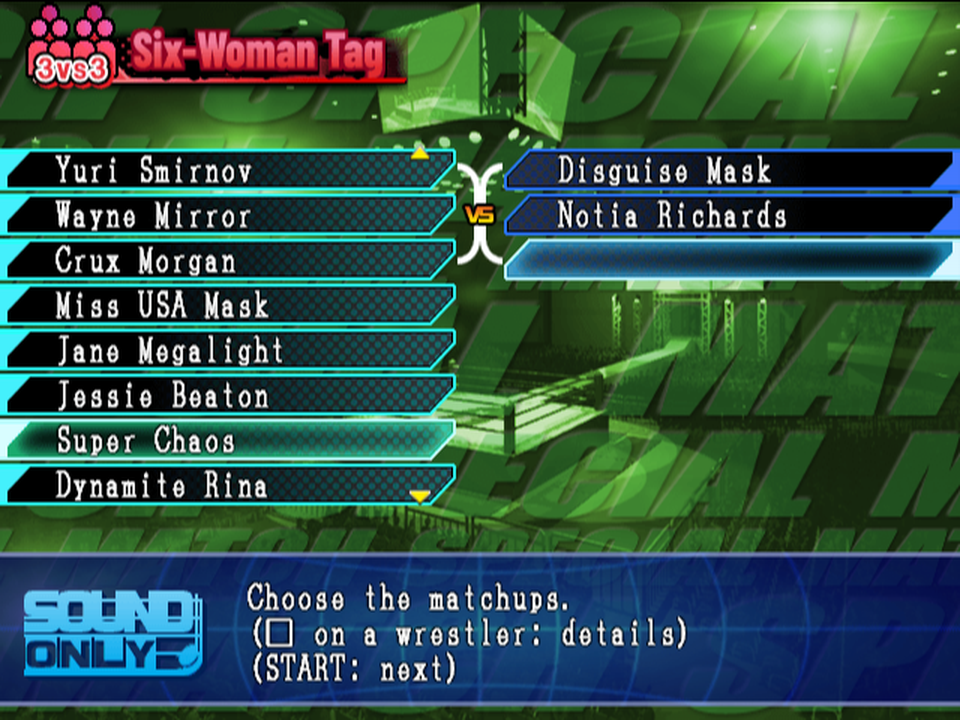
- Choose the match type: Singles Match, Tag Match or Six-Woman Tag.
- Set the level: LEVEL 1, 2 or 3 builds every wrestler as she'd be at 15, 18 or 20, so LEVEL 3 is everyone fully grown. It doesn't make the CPU smarter from the code.
- Choose the matchups from the whole roster. Square shows a wrestler's details; START moves on.
- On the match card, set who controls each wrestler and whether to watch, then Start Match (Before the Bell).
There's no venue, rules or time-limit option: every match is one fall, and the time limit is a fixed number of exchanges.
Saving
- Saves go to the memory card in slot 1. The game checks it at boot and offers to create its data, or to start without saving.
- In management mode, press START on the office's main menu for the system menu: Save, Load, Options, Change Years, Watch CPU and Quit to Title from the code. There are three save slots.
- Every management save also stores your gallery, and loading only ever adds to it.
Alternate between two slots in management mode, because of the invasion freeze, and keep one from before the Final Series, which happens only once.
Controls
Menus work the same everywhere: Circle chooses, Cross goes back, and a help line at the bottom explains the highlighted item.
| Button | What it does |
|---|---|
| Circle | Choose; move messages along |
| Cross | Back; delete a letter in name entry |
| Square | A wrestler's details, in lists; the command list, in a match |
| Triangle | Sort in the rankings; rebuild a show's matchups automatically when booking |
| L1 R1 | Turn pages (info pages, the gallery); change settings on the match card |
| R1 (hold) | Hide the message window during events verified in game, or the cards in a match |
| R2 (hold) | Fast-forward messages from the code |
| START | Skip the logos and opening movie; move on from a selection screen; open the system menu in the office |
The match controls are under Match Controls.
The opening movie can crash the game in PCSX2, the original Japanese version included (PCSX2 issue 12179). Press START as soon as the movie begins, or set the EE Cycle Rate to 50% before it plays and put it back afterwards.
How a Match Works
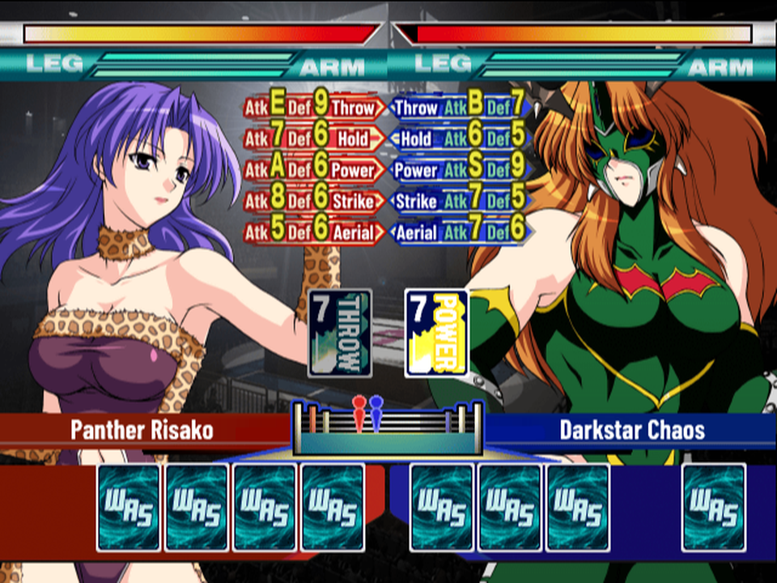
You don't steer the wrestlers. A match is a card game played one round at a time, and each round is an exchange:
- Both corners hold five cards. Each card is a move type with a number from 1 to 10 (10 shows as A).
- Each corner plays one card, and picks which move of that type to try (or lets the game pick).
- Each card gets a score. The higher score wins, and only the winner's move happens. The loser takes the damage.
- The played card is replaced from the deck, and the next exchange begins.
The score is mostly arithmetic you can see on screen: the card's number, plus your attack rating in that type, minus the opponent's defence rating in that type. The Atk and Def columns in the middle of the match screen are exactly those ratings. There's no dice roll in who wins an exchange; the only luck is in the cards you're dealt from the code.
Matches end by pinfall or submission. There's no KO, no count-out and no disqualification, and if the exchange limit runs out the match is a draw.
Small moves early, big moves late. Throw away your weak cards while the opponent is fresh, play to the types where your attack beats her defence, save the finisher card for a big move, and only go for the pin when her health bar is nearly empty.
Before the Bell
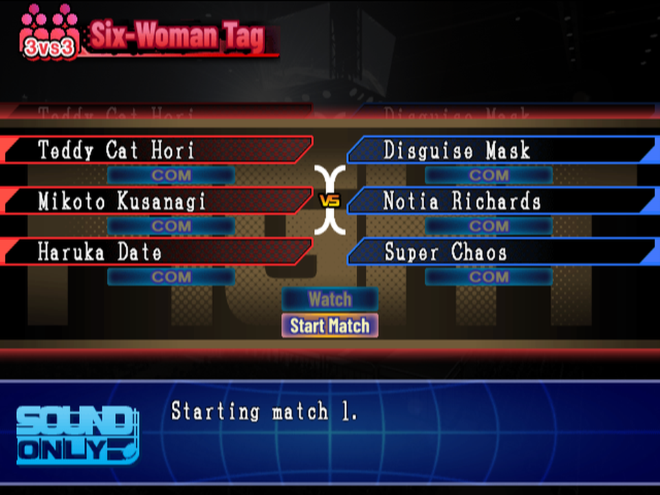
On the match card, move the cursor onto a wrestler and press L1/R1 to choose who controls her from the code:
- COM: the computer plays her, card and move.
- 1P-S-AUTO or 2P-S-AUTO: you choose the card; the game chooses the move and shows it as you browse your cards.
- 1P-MANUAL or 2P-MANUAL: you choose the card and the move.
One controller can't play both corners: the 2P settings read controller 2 only, so picking one while holding pad 1 leaves you unable to play the match from the code.
On the top button, L1/R1 switch between Watch and Skip; a skipped match isn't played at all, see Matches You Don't Watch. Then press Circle on Start Match.
Match Controls
| When | Button | What it does |
|---|---|---|
| Choosing a card | ← → | Browse your hand |
| Circle | Play the highlighted card | |
| Square | Command list: Pin, Tag (team matches), Return (outside the ring) | |
| R1 (hold) | Hide the cards and gauges to see the wrestlers; the match waits | |
| Choosing a move (MANUAL) | ↑ ↓, Circle / Cross | Pick the move / back to the cards |
| Double card | ↑ ↓, Circle | Choose the partner, then the double-team move (Square shows her details) |
| Caught in a hold | ↑ ↓, Circle | Reach the Ropes or Break Free (see Submissions) |
| Commentary | Circle | Move the text along |
A command you set (Pin, Tag, Return) only happens if your card wins the exchange. There's no pause menu in a match and no way to leave one once it starts from the code.
Reading the Match Screen
- Health bars along the top, with LEG and ARM meters under each. Holds wear down the meters; a worn-down limb makes submissions much more likely.
- Ratings in the middle: each wrestler's Atk and Def for Throw, Hold, Power, Strike and Aerial. They run 1-9, then A-E for 10-14 and S for 15.
- The two cards played this exchange, between the wrestlers.
- The small ring under them shows where the wrestlers are: centre, at the ropes or outside.
- During a move, its name with OFFENSE beside the attacker's name, and the commentary below.
The Cards
| Card | Its score uses | Notes |
|---|---|---|
| Throw Hold Power Strike Aerial | your attack − her defence in that type | The everyday cards. Holds are submissions and wear down the ARM or LEG meter. |
| Other | your Speed − her Speed | Weapons and dirty tricks, mostly outside the ring or for wrestlers who use them. |
| Finisher | always wins | Your wrestler's finishing move, with +40 damage. See Finisher Cards. |
| Double | +2, plus your side's winning streak | Tag and six-woman matches only: a double-team move with your partner. |
What You're Dealt
When you play a card, a new one is dealt from the code:
- Its type follows your wrestler's strengths. Her five attack ratings are ranked, and her best type comes up 25% of the time, then 21%, 17%, 15% and 14% for the weakest; Other comes up 8%. A specialist sees her specialty most. (Fans quote the same odds from the official guide.)
- Its number comes from a shuffled deck of 180 cards per corner, weighted toward 7 and 8.
- Finisher cards only appear once your wrestler is hurt. The chance is her grit + 7 − 2 × her health in tenths, so a high-grit wrestler gets them sooner. A match deals at most two, and the second only when she's 6 or more tenths of health behind.
- Double cards (1 in 6) appear only in tag and six-woman matches, once your wrestler has taken damage and while the opponent is below 80% health.
The CPU is dealt from exactly the same rules. Fans long suspected the computer draws better cards; the code shows it doesn't.
Back to topWho Wins an Exchange
Both cards are scored like this from the code, and the higher score wins:
| Part | Adds |
|---|---|
| The card's number | 1 to 10 |
| Your attack rating in the card's type | 1 to 15 |
| The opponent's defence rating in that type | subtracted |
| Level cost: the move's level, if it's bigger than the health she has lost | subtracted: 0 to 9 |
| Comeback bonus after she won 3 / 4 / 5 / 6 / 7+ exchanges in a row | +1 / +3 / +5 / +7 / +9 |
| Some moves against a downed opponent; a few against a standing one | +3 to +6; −1 |
| Asking to tag out, when your partner is fresher (Tag Matches) | the health gap in tenths, doubled at 5+ |
Ties go to whoever lost the previous exchange (a coin flip on the first one). There's no random term and no difficulty bonus, for you or the CPU.
Try It: The Exchange Calculator
Set up both corners' cards and see who wins and why. The numbers are the ones on the match screen.
Red corner
VS
Blue corner
Leaves out the small bonuses for particular moves against a downed or standing opponent, and the tag request.
The Level Cost: Small Moves Early
Every move has a level from 1 to 9. If the level is higher than the health the opponent has lost, counted in tenths of her bar, the whole level comes off your score. On a fresh opponent every move pays its level; as she wears down, bigger moves become free:
That's why matches build: jabs and body slams early, bombs and big suplexes late. S-AUTO and the CPU take the biggest move that's free from the code.
Comebacks and Ties
Being beaten up builds a comeback. After the opponent has won 3 exchanges in a row your card gets +1, then +3, +5, +7 and +9 from the seventh on. Together with ties going to the side that lost the last exchange, a one-sided match rarely stays one-sided.
Finisher Cards
- A finisher card beats any other card and can't be reversed. If both corners play one, the side that lost the previous exchange wins.
- It plays your wrestler's finishing move with +40 damage (+15 for a submission hold), and ignores the level cost.
- So save it for a big move the opponent isn't worn down enough for yet, or for the move that ends the match. Don't waste it on a submission at the ropes: a hold at the ropes is always broken (fans).
Reversals
About 25 big moves can be turned around by the wrestler who lost the exchange: a Backdrop into a Body Press, a Powerbomb into a huracanrana, a Moonsault onto raised knees. The chance from the code:
(move level + 3) − (10 − the loser's health in tenths) + 2 × the loser's Dexterity + a bonus if she's down + (10 − the winning card's number) %
Big moves and low cards get reversed more; a badly hurt wrestler reverses less. A reversal counts as the reverser winning the exchange.
Back to topDamage and Health
- Health = 50 + 10 × Strength + 30 × Stamina. The ARM (upper body) and LEG meters are each half of that.
- Damage = the move's damage at its level + the attacker's Strength, plus:
- +40 from a finisher card (+15 for a hold, first round only);
- Strength counts twice outside the ring;
- against a bleeding wrestler, + (10 − her health in tenths).
- Holds take a little health and a lot from the ARM or LEG meter, every round they last.
- Knockdowns: an exchange that does more than 40 damage knocks her down with chance (damage − 40) / 80.
- Outside: a move that carries past the ropes can take both wrestlers to the floor. There's no count-out; use Return to go back in.
- Recovery each exchange: the Recovery stat in singles, half in tag, none for the legal wrestler in a six-woman match. Partners on the apron recover only below half health. Bleeding halves it. Kicking out of a pin gives a one-off burst.
All from the code.
Back to topPins and Submissions
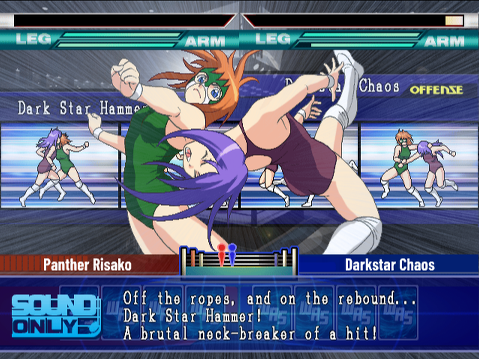
Pins
Every move has a pin type: never, only with Pin chosen, automatic (big suplexes, bombs and flying presses go straight into a cover) or cradle.
With Pin set and an ordinary move, she goes for the cover with this chance, by the opponent's health left from the code:
| Health left | 0 | 10% | 20% | 30% | 40% | 50% | 60% | 70% | more |
|---|---|---|---|---|---|---|---|---|---|
| Goes for the cover | 100% | 90% | 40% | 20% | 10% | 5% | 2% | 1% | never |
Then comes the count. While she has any health left she kicks out at least 89% of the time, and she can grab the ropes if you're beside them or be saved by a partner. At zero health only her grit can save her: 2 × grit % in singles, 1.4 × in tag, 1 × in six-woman. Fans call those last-second escapes "2.9 kick-outs".
Don't count on a pin until the health bar is nearly empty. Pinning early mostly wastes the exchange's command.
Cradles
Small Package, Inverted Cradle, Rolling Cradle and La Magistral can't win while she has 40% health or more. Below that they win outright with a chance of 10 × the move's level ÷ (her health in tenths + 1) %, health left or not. The classic upset finish.
Submissions
Each round of a hold, the wrestler caught in it chooses:
- Reach the Ropes: crawl a step toward the ropes. At the ropes the hold is broken, always.
- Break Free: Dexterity ÷ 2 + her health in tenths + 2d6, +2 for each earlier try, against the holder's Hold attack + 2d6.
If she stays in it, she may give up: the chance is about (Hold attack − Hold defence + the move's level) ÷ 2 %, and it grows fast once her health or the targeted ARM or LEG meter drops below 30%. A hold lasts at most (level + 1) ÷ 2 rounds. Submissions can win with health left from the code.
Back to topTag Matches, Time Limits and the CPU
Tag and Six-Woman Matches
- One legal wrestler per side holds the cards. Partners can be on different controllers; the pad follows whoever is legal.
- Tag (from the Square command list) happens only if your card wins. Asking to tag adds the health gap between your partner and you, in tenths, to your score: doubled when it's 5 or more, and subtracted if your partner is more hurt than you.
- Double cards (in the ring only): choose the partner and a double-team move. The five double-team moves have requirements on the pair (fans: a morale gap and a combined rating).
- Partners break up pins. The ARM and LEG meters aren't reduced in team matches.
Time Limits
The limit counts exchanges, not minutes from the code. When it runs out the match is a draw; where a match can't be drawn, the lower-rated side gets the win.
| Match | Exchanges |
|---|---|
| Singles | 40 (48 for a main event (unverified)) |
| Tag | 50 or 60 |
| Six-woman | 66 or 80 |
| Tournaments | no limit |
How the CPU Plays
- It plays the card with the best number plus advantage, with a bonus for each wrestler's favourite types (every wrestler has a card strategy).
- It plays a finisher card almost at once: 20 / 40 / 60 / 80 / 100% chance on its first five exchanges with one in hand.
- It takes the biggest move that avoids the level cost, pins whenever you're at 70% health or less, and tags out to a fresher partner.
- No difficulty setting changes how it plays. Special Match's LEVEL 1/2/3 only sets how far the wrestlers have grown (ages 15, 18 and 20).
All from the code.
Matches You Don't Watch
Skipped matches, and the shows you don't watch in management mode, aren't simulated from the code. Each side gets
rating + 10 × its best style advantage over the opponent + 5 × grit (+50 for the champion in a title match)
and the gap picks the winner from a table: even is 50/50, 51-100 ahead wins about 62% of the time, 251 ahead always wins. These matches are never drawn.
Back to topMatch Strategy
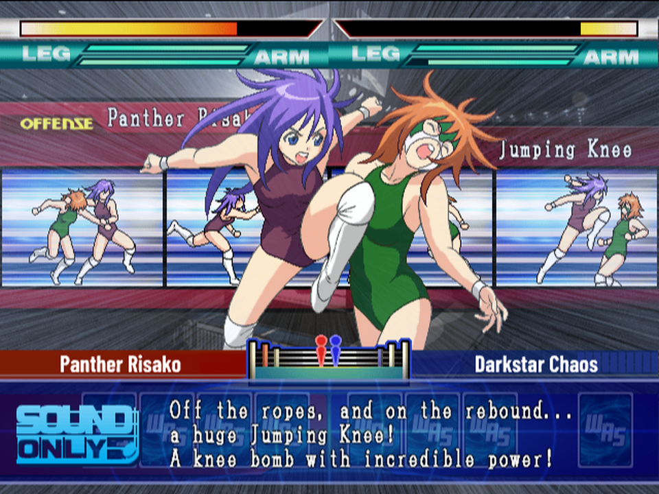
- Throw away weak cards early. While both wrestlers are fresh, damage is low and every move pays its level. Let the opponent land small moves, build your comeback bonus, then rush with your best cards once she's worn down (fans).
- Play to your strengths. Your best types come up most (25%), and a card wins on attack minus defence. Off-specialty cards are best spent in the type where her defence is lowest (fans).
- Save the finisher card for a big move that would otherwise pay the level cost, or the match-ending one.
- Pin only near zero. Above 20-30% health a pin rarely even starts. Below 40%, a cradle can steal the match.
- Submissions work best in the centre of the ring, after a knockdown, with high-level holds, on a worn ARM or LEG meter (fans).
- In tag matches, let the weaker partner take the beating, then tag in the fresh one for the tag bonus. Play Double cards after a run of wins (fans).
- Against stronger opponents, expect high-grit kick-outs at zero; cradles and automatic-pin moves are your best chance (fans).
Possible bugs in the match code
Read in the code, none checked in the game: the success % shown while you choose a card ignores how far the card is from the midpoint, so treat it as a rough guide; the Lariat's reversal compares the winner's Hold rating where the loser's was probably meant; the pin kick-out roll looks inverted (it applies only when the move's level is below half the pinner's attack); and unwatched tag matches give +20 to both sides. Fans also report some wrestlers always lose ties because of their card strategy.
Starting a Promotion
Management mode is the heart of the game. You run a women's wrestling promotion for a number of years you choose, then all promotions meet in the Final Series and are ranked by their total assets. There's no fixed story in between: every event is rolled from stats, flags and the calendar.
New Game Setup
| Step | Choices |
|---|---|
| Players | 1-4 people, each confirming on their own controller |
| Promotions | the players plus at least one CPU promotion, 5 at most |
| Years until the Final Series | 1-99, 10 by default. You can change it later in the System menu, until the Series has been held. |
| For each player | press Circle on your own controller; then the promotion's name and short name (the name entry has Kanji, Kana and ABC pages), a logo, and a home base picked on the map |
| CPU promotions | New Japan Women's Pro is always in; the others come from the remaining eight |
You start with 3,000 AP and no wrestlers, and a show needs at least six. There's no difficulty setting in management mode from the code. Your home prefecture starts with +0.3 popularity and the rest of its region +0.2; the big cities (Tokyo, Kanagawa, Aichi, Osaka) start highest everywhere.
The Rival Promotions
| Promotion | Short | Starting AP | Home | Tours | Starts with |
|---|---|---|---|---|---|
| New Japan Women's Pro 新日本女子プロレス | NJWP | 4,000 | Tokyo | nationwide | Panther Risako, Mighty Yukiko, Bomber Kishima, Riyu Kikuchi, Shinobu Echigo, Hitomi Fujishima |
| Pacific Women Pro 太平洋女子プロレス | PWPW | 4,500 | Aichi | mid-size halls | Teddy Cat Hori, Blade Uehara |
| Gekitouryu 激闘龍 | BD | 6,000 | Hyogo | big cities | nobody |
| Japan Ocean Women Pro 日本海女子プロレス | JSW | 5,000 | Ishikawa | Hokuriku | nobody |
| Palacion パラシオン | PLC | 4,500 | Hiroshima | Chugoku | nobody |
| JWI | JWI | 9,000 | Saitama | big cities | Beauty Ichigaya |
| World Women Pro ワールド女子プロレス | WWPA | 9,000 | Osaka | nationwide | nobody |
| WARS | WARS | 6,000 | Tokyo | mid-size halls | Thunder Ryuko, Suzumi Ishikawa |
| Pro Wrestling NEO プロレスリング ネオ | NEO | 4,000 | Kanagawa | mid-size halls | nobody |
The English names follow each promotion's own logo. Stars whose promotion isn't in your game start as free agents: fans list Reira Kirishima, Miki Shibata, Mimi Yoshihara and Blade Uehara as ready to sign in year 1. For an easier game, fans pick the rivals with no wrestlers and little AP.
Back to topThe Month
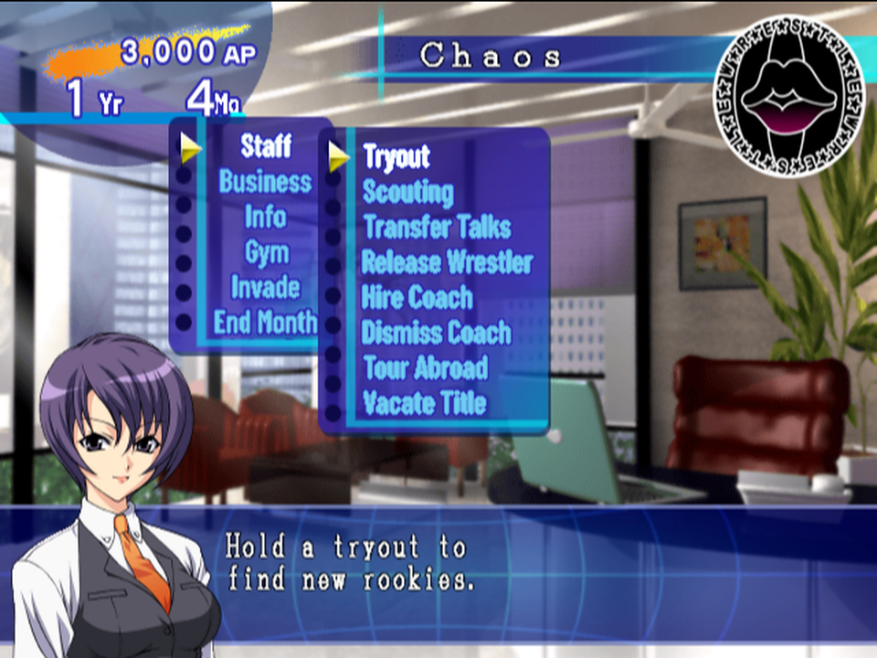
The game starts in April of year 1, and the year (and every wrestler's age) changes each April. Each month runs in this order from the code:
- News and events, read by your secretary, Kiriko Inoue. A busy month queues several (Events).
- Office work in the menus below. Most commands work once a month ("Done for this month."); releasing, dismissing, vacating a title, autographs and Info have no limit.
- End Month takes you to booking: first the month's show roster (at least 6, an even number, at most 30, guests included), then up to 8 venues, never two in the same prefecture in one month, then the card for each day. A day can be Regular matches, a Tournament or a League (up to 8 teams), with title matches; Triangle builds the matchups automatically. The last match is the main event, and it sells the tickets.
- Shows, day by day: the crowd, a chance of cancellation, and the matches, which you can watch, play or skip.
- Month end: popularity changes, the financial report, and "This month's growth results".
January brings the year-end Wrestling Awards; December brings New Japan's EX Tag League invitation and no invasions.
The Office Menus
- Info (free): your promotion's data, the roster, rankings, the influence map (your popularity) and dominance map (who leads each prefecture), months since your last show in each prefecture, merch shops.
- Gym: training settings, special training (20 AP), talk (10 AP) and coach assignments (Growth and Training).
- Invade: send 1-3 wrestlers into a rival's shows (Rivals).
- System menu (press START on the main menu): Save, Load, Options, Change Years (until the Final Series), Watch CPU (all shows, the final only, or none) and Quit to Title from the code.
Money
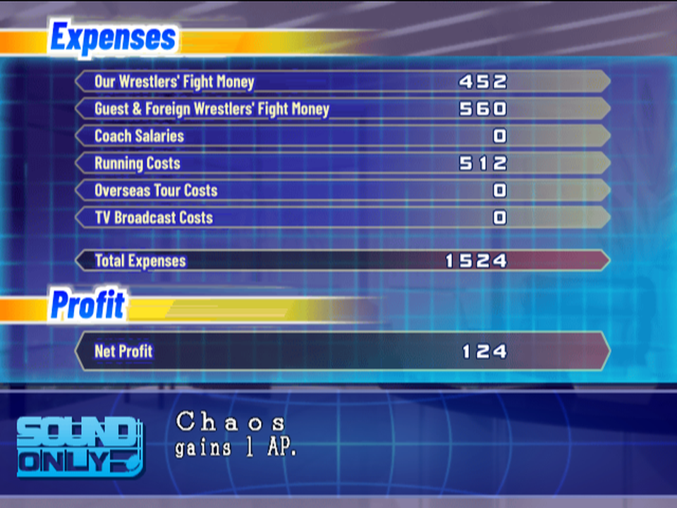
AP is the only currency: 1 AP is ¥100,000. Three months in a row starting in the red is bankruptcy, which ends a one-player game from the code. Any month that starts at 0 AP or more resets the count.
Income
- Tickets: ¥4,000 a head, so 25 spectators make 1 AP. This is almost all of your income.
- Merch shops: each month, 1 AP × your popularity (0-10) in each prefecture with a shop.
- Media events: a film +200 AP, a photo book +100 AP, one-day police chief +50 AP.
- Awards: MVP 300 AP; Rookie of the Year and Match of the Year 100 AP each.
TV is not income here: it costs AP and pays back in popularity.
Expenses
- Venue rent per show day: capacity × ¥3,000 × the hall's rate below, charged on capacity, not on the crowd.
- Fight money: 1 AP per wrestler on the month's show roster, plus a fee per match that grows with rating and popularity. Guests on your cards cost more.
- Coaches: up to 3 AP each a month. Running costs: your promotion rating ÷ 100 AP a month. Tours abroad and TV upkeep.
| Hall size (seats) | 500-1,000 | 1,500-2,000 | 2,500-3,000 | 3,500-5,000 | 5,500-7,000 | 7,500-10,000 | 11,000-30,000 | 40,000-55,000 |
|---|---|---|---|---|---|---|---|---|
| Rent, indoor | 30% | 33% | 41% | 54% | 62% | 71% | 76% | 85% |
| Rent, outdoor | 25% | 26% | 34% | 43% | 56% | 62% | 72% | 85% |
| Breaks even when (indoor) | 22.5% full | 25% | 31% | 40.5% | 46.5% | 53% | 57% | 64% |
Burglary: once you've debuted and hold 2,000 AP or more, there's a 1% chance a month of losing a quarter or half of it. Fans spend spare AP partly to avoid this.
TV Stations
A contract runs 12 months, each station serves one promotion at a time, and it adds +0.1 popularity in its area at intervals. For the price, it's a weak deal: a national station costs 3,300 AP a year for a few tenths of popularity from the code.
| Station | Area | Contract | Upkeep a month | +0.1 every |
|---|---|---|---|---|
| DaiNippon TV | national | 1,500 | 150 | 4 months |
| Odaiba TV | national | 1,000 | 100 | 6 months |
| TV Kanto | Kanto | 500 | 50 | 3 months |
| Tsutenkaku | Kinki | 300 | 30 | 3 months |
| Misokatsu TV | Tokai | 250 | 25 | 3 months |
| Kitaguni TV, Ringo TV, Sado TV, Miyajima TV, Sanuki TV, Aso Volcano | Hokkaido, Tohoku, Koshinetsu, Chugoku, Shikoku, Kyushu | 200 | 20 | 3 months |
Shows and Popularity
Popularity
Your promotion has a popularity from 0.0 to 10.0 in each of 48 areas (the 47 prefectures, with Hokkaido split east and west). It multiplies every crowd, and it only moves slowly from the code:
| What | Popularity there |
|---|---|
| A show day | +0.1, but only if the hall was at least 90% full (or popularity is still 1.0 or less) |
| No show for a long time | −0.1 at 8, 14, 20 and 26 months, then every 6 months |
| Advertising | +3 / +2 / +1 everywhere for a TV ad / radio / flyers (the help says for that month only) |
| Autograph session | + (the 1-3 wrestlers' total popularity) ÷ 1000 |
| TV | +0.1 in the station's area at intervals |
A hidden saturation rises after each show and falls by 25 a month, and it lowers the next crowd there. With the one-show-per-prefecture-a-month rule, that rewards touring: fans return to a prefecture only after 3-5 months.
Venues
- 384 venues, 8 in each area, each with a capacity and indoor or outdoor. The biggest hold 55,000 (Fukuoka) and 50,000 (Tokyo, Osaka, West Hokkaido).
- The Venue facility caps the halls you can book: up to 2,000 / 3,000 / 6,000 / 10,000 seats at levels 0-3, anything at level 4.
- Each show day has a 5% chance of cancellation: snow (December-March), a typhoon (June-September), a traffic accident, an earthquake, or foreign wrestlers not arriving.
What Fills a Hall
The crowd formula from the code, in plain words:
- Each wrestler on the card draws fans by her rating and popularity. Wrestlers from other promotions draw two thirds as much.
- That total is multiplied by your popularity in the area and reduced by saturation. Early on (popularity 0.5-0.9) crowds sit near the floor of 425, so only the smallest halls fill.
- This base part stops at 85% of capacity. A sell-out needs a strong main event: the last match's total rating adds up to 20% of capacity, and it counts most in small and mid-size halls. A weak main event takes fans away.
- A title match adds more by the belt's value.
- How the matches go doesn't matter to the box office; only the card does.
Fans' rule of thumb: six wrestlers rated 1000+ can sell out 6,000-7,000 seats without a title match.
Back to topYour Wrestlers
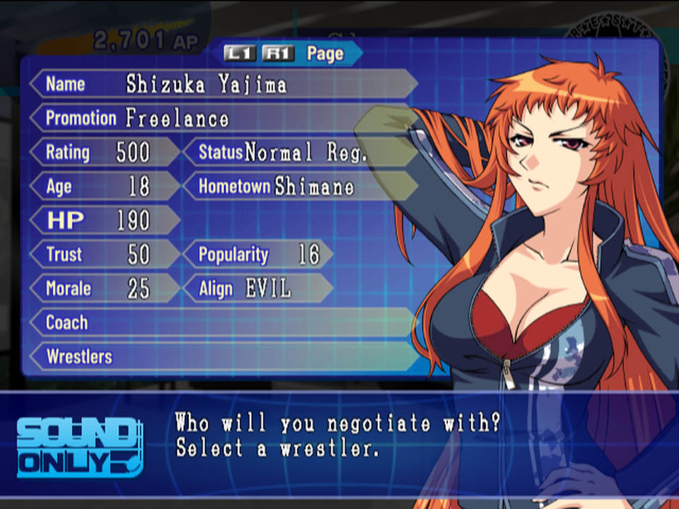
| Field | Range | What it does |
|---|---|---|
| Style ratings: Throw, Hold, Power, Strike, Aerial, attack and defence | 1-15 (S) | Decide who wins exchanges. Each attack + defence pair is at most 27. |
| Basics: Strength, Dexterity, Stamina, Recovery, Speed | 1-10 | Total at most 40. Each caps its linked style: Throw-Str, Hold-Dex, Power-Stam, Strike-Recov, Aerial-Speed. |
| Rating | up to about 2000 | 10 × (style ratings, basics and learned moves). Drives crowds, pay and the final ranking. |
| HP | 50 + 10 × Strength + 30 × Stamina | |
| Popularity | 0-99 | Draws crowds. Upsets build it; a star without matches loses it. |
| Trust | 0-99 | Her trust in you. 50 when signed; low trust means skipped practice and leaving. |
| Morale | 0-99 | Pushes her alignment, and gates media events. |
| Align | GOOD / NORMAL / EVIL | |
| Status | e.g. Normal Reg. | Her condition (Normal, Hurt, Injured, Hospital), then her faction: Reg. (regular), Rev. (Revolution Army) or Reb. (Rebel Army) (Factions) |
| Hidden | Talent (S to E), growth type (early / normal / late), career length and grit, which saves her from pins and brings finisher cards sooner |
Popularity, Trust and Morale
- After a match: a win over stronger opponents gives up to +4 popularity, a win over weaker ones nothing, a loss to weaker ones up to −2. Upsets make stars.
- Each month, a star above 60 popularity who had no matches loses 2-5.
- Trust: −5 a month while hurt, −15 in hospital, +20 on individual vacation training. Below 6 she may skip practice or go missing; at 0 she may quit.
- Morale at 70+ drifts her toward GOOD; below 31, toward EVIL, and it can feed the Rebel Army.
Injuries, Retirement and Leaving
- Injuries come in levels: Hurt (can still wrestle), Injured, Hospital (about a month), severe, and career-ending. Hurt and Injured heal with chance 10 × (6 − matches this month) % a month: rest heals.
- Retirement is certain at 27, and comes earlier for a wrestler in decline who holds no title and has fallen below 81% of her best rating. Retired wrestlers can become coaches.
- A non-champion with trust 80 or less may leave for abroad (3-5% a month once you have 6+ wrestlers); fans say she comes back a year later as a free agent.
- Three Aprils after retiring, a wrestler is reborn as a 15-year-old rookie, usually as her 2P alternate (fans).
Growth and Training
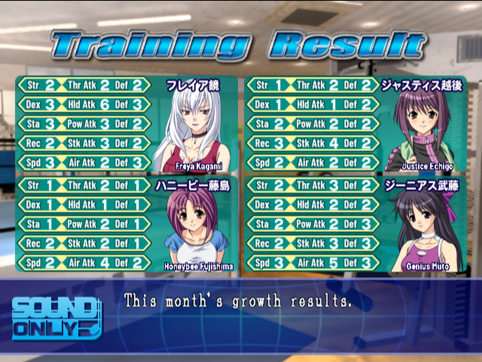
At month end each wrestler earns experience from three sources from the code:
- Matches, by how much stronger the opponents were. Losing to much stronger opponents still teaches; beating much weaker ones teaches nothing, and losing to them costs.
- Training = coach ability × (10 − matches this month) × talent × age × condition: every match costs a tenth of the month's training.
- Age: +10 and +5 while rising and growing, then −5, −15 and −30 as she declines.
| Opponents stronger by | 200+ | 151-200 | 101-150 | 51-100 | about even | weaker 50-99 | 100-149 | 150-199 | 200+ |
|---|---|---|---|---|---|---|---|---|---|
| Win | 80 | 40 | 30 | 25 | 20 | 15 | 10 | 5 | 0 |
| Loss | 25 | 20 | 15 | 10 | 5 | 0 | −3 | −6 | −10 |
Talent multiplies everything (S ×15 down to E ×5). Growth is young: wrestlers grow fastest in their mid-teens, peak around 18-22 and start declining at 21-23, by type. Fans add that about 80% of experience follows her existing strengths and only 20% the training menu, so weaknesses barely grow.
Training Settings
In Gym, set each wrestler (or the whole group) to Style (the default), Weakness, Basics, Offense, Defense, Moves, Vacation, or one style category.
- Moves: pick a move and a level 1-9; she learns it at 10 + 2 × (level − 1) experience, and each learned move adds 10 to her rating. You can also change a move's level, choose the finisher and rename moves. Fans: put the cursor on an empty move slot first, or the new move replaces an old one.
- Vacation (individual): no training, trust +20, and injuries heal.
Coaches, Special Training and Talks
- Coaches: up to 5 (by the Gym facility), each for up to 5 wrestlers. A coach's ability replaces the wrestler's own in the training sum. Fans say good coaches only turn up once your promotion rating reaches 3000.
- Special training (20 AP, needs a coach): 65-80% to double this month's training (trust +5); failure wastes it (trust −5), and one time in ten worsens an injury.
- Talk (10 AP):
| Option | Works | Effect |
|---|---|---|
| Praise | 70% | morale +10 |
| Scold | 70% | trust +5 (if it fails: morale −10, trust −5) |
| Cheer | 70% | trust +10: the best way to repair trust |
| Hear worries | 10% | clears a grudge with another wrestler |
| Instruct (GOOD / NORMAL / EVIL) | 5-10% | changes her alignment |
Recruitment
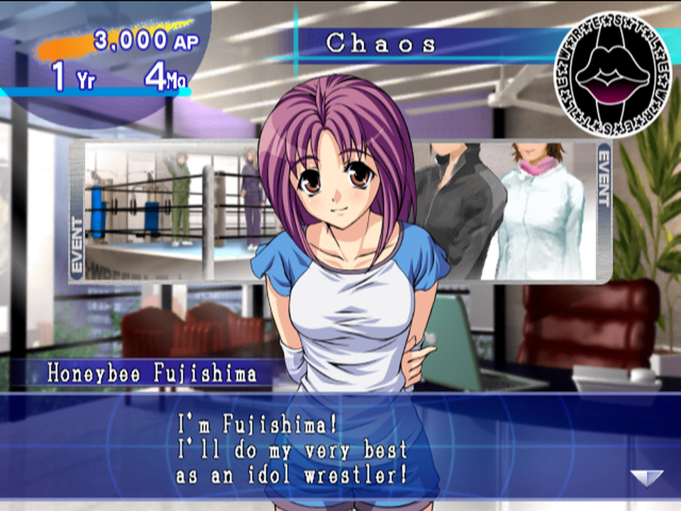
Tryout (1-99 AP)
Finds one rookie, sometimes two. Spending under about 50 AP gives the same result as 1 AP, and the best chance of a top-talent rookie is about 10% from the code. Fans: "1 AP almost always turns up one rookie."
Scouting (50 AP a region)
Up to three rookies born in the region you pick, with about a 35% chance of top talent, against 10% from a tryout. Signing costs 10 AP × her age.
Where the best rookies are, year by year (fans)
Year 1: Toshimi Minami (Shikoku) and Haruka Date (Kyushu); Kanto and Chugoku are rich. Year 2: Kanna Kamui (Hokkaido). Year 3: Chigusa Yuki and Megumi Muto (Tokai). Year 4: Reika Ichigaya (Kanto). Year 5: Ryuko Yoshida (Kyushu). Year 6: Yukiko Shinzaki (Chugoku). Fans say the best rookies need a promotion rating of 3000, and save before scouting.
Transfer Talks
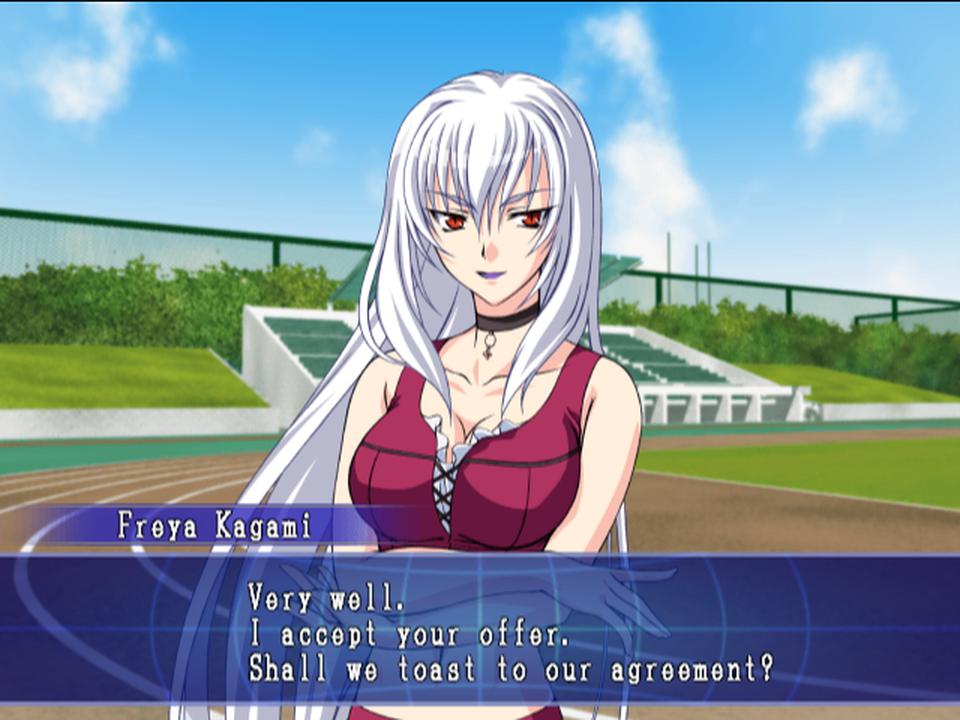
You offer 1-99 AP on top of a minimum fee (rating − 400 + 5 × popularity, at least 100 AP, paid only if she signs). Her resistance grows with her rating, her trust in her promotion, her popularity, your roster size and her rank in her promotion; your roll is the AP you add plus a random 1-100 plus a quarter of what you added last time. The added AP is always spent, and a failure makes the next try easier from the code.
- It always fails for a champion, a wrestler who joined less than 3 months ago, or one booked in an event.
- The code suggests every transfer succeeds before your debut show: a strong opening if it holds (unverified).
- Rivals can poach your wrestlers without a fee (fans).
Rookies not signed by 17 become free agents, who stay on the market until 26 (fans).
Back to topBelts, Partners and Facilities
Your Own Belts
| Belt | Cost | Promotion rating needed | Wrestlers needed |
|---|---|---|---|
| First | 1,000 AP | 2000 | 6 |
| Second | 3,000 AP | 3000 | 8 |
| Third | 5,000 AP | 4000 | 10 |
- Types: Heavy, Tag and Junior. Belts change hands in title matches on your cards.
- Defend them: 5 months without a title match brings a warning, and at 6 the champion is stripped.
- A Junior belt is vacated when its champion turns 19 or reaches rating 1000.
- Fans: heavyweight belts first, since junior belts draw poorly; title matches build both wrestlers' trust twice as fast.
Overseas Partners
| Promotion | Style | Partnership |
|---|---|---|
| IWWF | basics | 1,000 AP |
| WWCA | throws | 800 AP |
| EWA | holds | 700 AP |
| AAC | aerial | 600 AP |
| TWWA | strikes | 500 AP |
| GWA | power | 500 AP |
A partner sends wrestlers to your shows (fans: about 4 a month), lets you tour abroad, and brings visiting champions and its belts. A partnership is exclusive, and adds half its cost to your rating. Foreign belts must be defended abroad once a year. Fans' standard first move: a 500 AP partnership in April of year 1, so you can run shows right away.
Facilities
| Facility | Cost per level (AP) | Effect by level |
|---|---|---|
| Venue | 1,000 / 3,000 / 5,000 / 10,000 | largest hall 2,000 / 3,000 / 6,000 / 10,000 / any |
| Dorm | 500 / 1,000 / 3,000 / 5,000 / 10,000 | roster limit 6 / 8 / 10 / 12 / 14 / 16 |
| Gym | 500 / 1,000 / 1,500 / 2,000 | coach limit 1 / 2 / 3 / 4 / 5 |
| Tour bus | 500 / 1,000 / 1,500 / 2,000 | "raises wrestler trust by 5" |
| HQ | 5,000 / 10,000 / 30,000 | promotion rating +3000 / +6000 / +10000 |
| Merch shop | 500 each, one per prefecture | 1 AP × your popularity there each month |
The Venue is the key facility: without it nothing over 2,000 seats. The HQ's rating costs upkeep (rating ÷ 100 AP a month) but opens belts and counts at the end. A shop pays at most 10 AP a month.
Back to topRivals, Events and Factions
Rival Promotions
CPU promotions invest in facilities and shops, hire coaches, recruit over time, and can go bankrupt like you; they come back a few months later with nothing from the code. Fans say over-expansion bankrupts them around years 10-15.
- Invading: send 1-3 wrestlers into a rival's shows, once a month, after your debut. The target invades you back. While an invasion is set, no vacation and no tours abroad.
- New Japan invades you (5% a month) once your rating reaches 1200, never in December.
Fans report the game can hang on the start-of-month report when another promotion invades you, especially a counter-invasion, or when an invasion arrives in the same month as a coach's retirement. Invade sparingly (especially JWI), and keep two alternating saves.
Events
Events are rolled at the start of each month, in a fixed order from the code. The ones to know:
| Event | When | What happens |
|---|---|---|
| Fan club | popularity 60+, 30% a month | rating +10 |
| Film offer | popularity 60+, morale 60+, 10% | +200 AP, popularity +10, rating +50; she misses the month |
| One-day police chief | popularity 80+, morale 50+, 10% | +50 AP, rating +20 |
| Photo book | popularity 70+, morale 20+, 10%, once | +100 AP, rating +20, two pictures for the gallery (answer Yes) |
| Wrestling Awards | every January | MVP, Rookie of the Year, Best Foreign Wrestler, Match of the Year |
| EX Tag League | December, rating 1500+ | Yes sends your top two to New Japan's year-end league |
| Bad blood | after matches between different alignments | a grudge between two wrestlers |
| Heartbreak | 5% | this month's training suffers |
| Show cancelled | 5% a show day | |
| Burglary, in the red, bankrupt | see Money |
Media events cost the wrestler that month's training and shows; fans warn that too many slow her growth. A business Vacation plays one of 35 wrestlers' own beach scenes 75% of the time.
Factions: the Revolution and Rebel Armies
- Revolution Army 革命軍: forms (20% a month) when you have 8+ wrestlers and your top wrestler (21 or older) and a rising star (19 or younger) have different alignments. Younger wrestlers of the star's alignment join. After 6+ months it demands a showdown; afterwards it disbands or carries on.
- Rebel Army 反乱軍: forms (20%) with 6+ wrestlers and at least two EVIL wrestlers with morale under 31. No showdown; it ends when its members leave. Fans: rebels draw half the crowd. Fix it with Praise, Instruct, or 6+ months touring abroad.
The Final Series and the Endings
In the April after the set number of years (with 10 years, "as if year 11"), once per game: "At last, the strongest promotion will be decided." Each promotion enters one wrestler in the Junior event, a pair in the Tag event and one wrestler in the Singles event from the code.
- Junior: 18 or younger and rated 990 or less (fans). Mind the birthday: everyone is a year older in April.
- Wrestlers who spent that March abroad or resting can't enter (fans). Health carries over between rounds, which favours submission specialists.
- Prizes: 500 / 200 / 100 AP for the top places in each event, × (years ÷ 10 + 1).
- Fans' targets to win everything: a singles wrestler around 1500, a tag pair around 1350-1450, a junior around 900-990.
The Final Ranking
Every promotion's AP gets a valuation added, then they're ranked by total AP from the code:
| Item | Adds |
|---|---|
| Each wrestler rated 500+ | 2 × (rating − 500) AP: a 1500-rated wrestler is worth 2,000 AP |
| Each merch shop | 50 AP |
| Facilities, overseas partners | by level |
| Leading prefectures and regions, national popularity | small amounts |
Spoiler: the three endings
- Normal: your promotion isn't first. The staff roll.
- Good: first in total AP. The staff roll over wrestler pictures.
- Special: first in total AP, and all three Final Series events won, and first in popularity in every prefecture (fans; the exact test wasn't traced). Every wrestler on your roster congratulates you, then the staff roll.
Play continues afterwards, up to year 99, but the Final Series can't be repeated: keep a save from before it. Fans add that a 1-year game can't reach the best ending, because New Japan ranks first until April of year 2.
Management Strategy
From the mechanics above and the fan sources.
Year 1
- Base in Tokyo or Kanto if you want the Special ending: the best starting popularity, and you can overtake New Japan there.
- April: sign a cheap overseas partnership (TWWA or GWA, 500 AP) so imported wrestlers fill your cards. One experienced free agent (around 900 rating) makes a starting ace.
- Recruit by tryout at 1 AP and scouting.
- Debut quickly with 6 wrestlers. Run up to 8 shows a month in the smallest halls you can fill: 90%+ full raises popularity, and rent is charged on capacity. Rotate prefectures and return after 3-5 months.
- Once you have 5-6 of your own, an 8-wrestler league padded with imports fixes most of the card, puts your ace in the main event, and gives youngsters strong opponents.
- Two months in the red are survivable; the third is the end.
Growing Wrestlers
- Develop teenagers: growth is front-loaded, and decline starts at 21-23.
- Book trainees against much stronger opponents: a gap of 200+ gives full experience even in a loss. Fans' "tag method" pairs a trainee with high-rated imports for a big team gap.
- Limit matches: each one costs a tenth of the month's training. Special training pays with a strong coach.
- Keep trust above 6 with Cheer and vacations; rest the injured.
Money and Rivals
- Buy the Venue before booking big halls, the Dorm when the roster is full, coaches early.
- Ads are the fastest popularity (+3 everywhere for 200 AP). TV is expensive for what it gives.
- New Japan dominates early. Fans weaken it: take its overseas partners, then poach its best right after it has spent on facilities. Its bankruptcy wipes its popularity, which makes the Special ending far easier.
The Last Years
- Hoard AP and highly rated wrestlers; prepare a junior (18 or under and 990 or less in April), a tag pair and a singles ace; keep the champions home in March.
- Save before the Final Series.
Known Bugs
- Invasion freeze (see Rival Promotions): keep two alternating saves (fans).
- Bankruptcy freeze: when a CPU promotion goes bankrupt, some of its wrestlers may vanish for good (fans).
- Found in the code, unconfirmed: tours abroad cost 5 AP a month though the text says 50; the TV popularity timing may not match its text.
The Roster
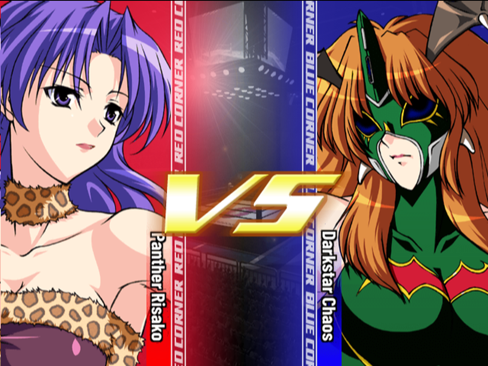
All 206 wrestlers, with the ratings they have in the exhibition modes. The ratings are the numbers on the match screen: attack / defence for each move type, then the five basics. Her best attack is highlighted: it's the card type she's dealt most often (What You're Dealt).
- LEVEL works like Special Match's setting: Japanese wrestlers at LEVEL 1 and 2 have 50% and 75% of their LEVEL 3 ratings; foreign wrestlers are the same at every level from the code. In management mode, ratings grow and decline with age and training instead.
- Starts says where she is in a new management game: on a rival's roster, a free agent, in the tryout pool from year 1, or debuting as a 15-year-old rookie in a later year. Foreign wrestlers come with the overseas promotions from the code.
- Click a row to see her moves and the level she knows each one at.
| Wrestler | Finisher | Starts | Align | Throw | Hold | Power | Strike | Aerial | Str | Dex | Sta | Rec | Spd |
|---|
The Roster in Pictures
Everyone, grouped by where she starts in a management game. Click a picture to see it larger.
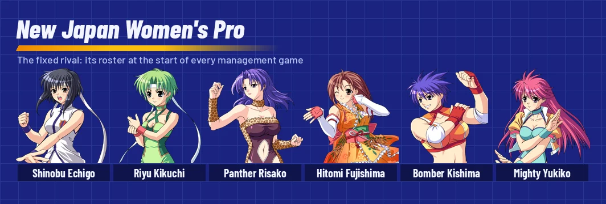
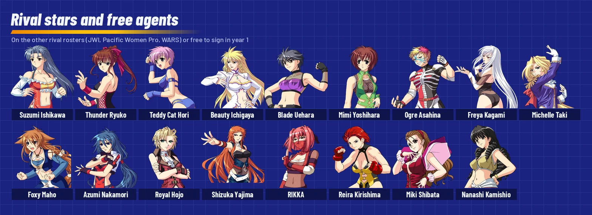
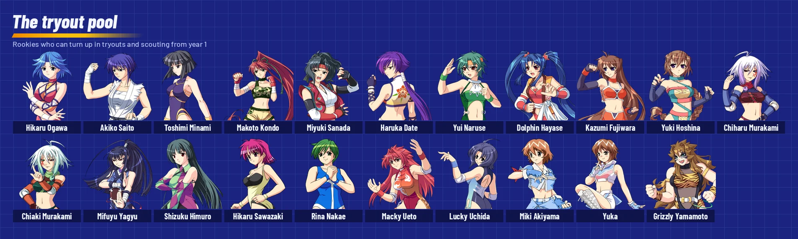
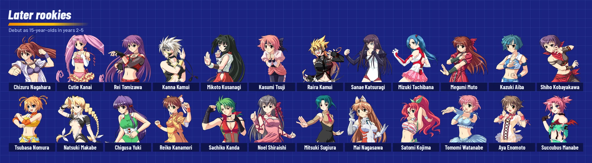
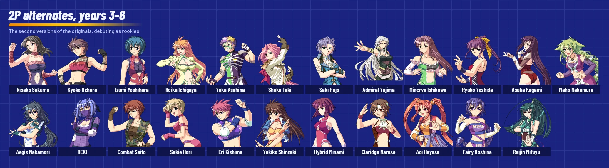
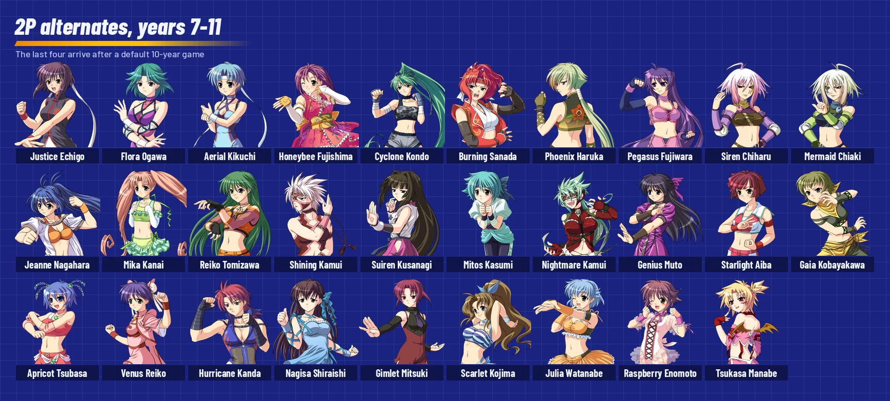
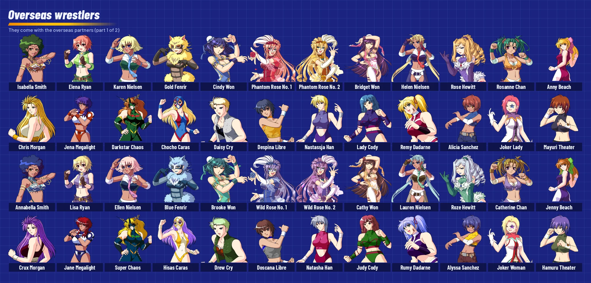
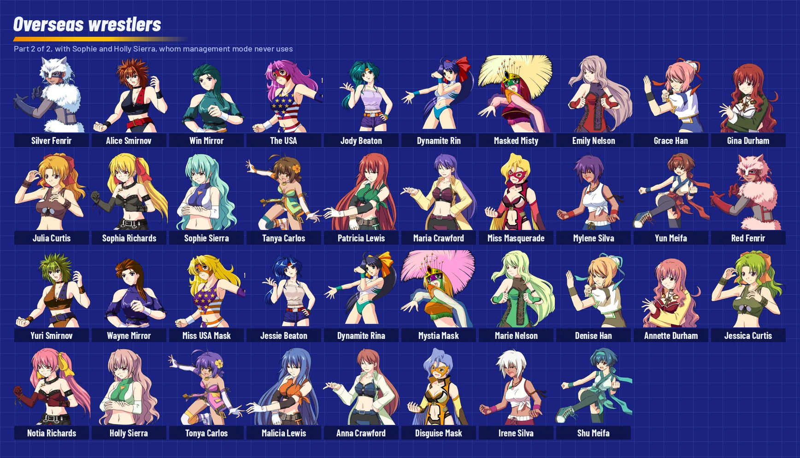
Every Move
The game's 105 moves, read from its move table from the code. Levels are the levels a wrestler can know the move at, and damage is at the lowest and highest of them, before the attacker's Strength is added (Damage and Health). Holds that target a limb do most of their damage to the ARM or LEG meter. Reverses into lists what the loser of the exchange can turn it into (Reversals); the Reversal group are those counter moves. Click a row to see who starts with the move.
"Where" is our reading of the move table: in the ring, anywhere, or only at the ropes and outside (unverified).
| Move | Type | Levels | Damage | Pin | Where | Reverses into | Wrestlers |
|---|
Secrets
The game has no button codes, passwords or debug menus: every button check is a single press, and the name entry compares no words from the code. Fans agree there are no tricks to find. What there is, is below. The technical side (addresses, and what was searched for and not found) is in HIDDEN_CONTENT.md.
Hold R1 to Hide the Message Window
During events and Yes/No questions, hold R1 to hide the message window and see the whole picture behind it; let go to bring it back. It works everywhere except the staff roll verified in game. In a match, R1 hides the cards and gauges the same way.
Every Wrestler in Exhibition
All 206 wrestlers can be picked in the exhibition modes from the start, the 2P alternates and the two Sierras included. Nothing needs unlocking from the code; Holly Sierra verified in game.
The 2P Alternates
52 wrestlers are 2P alternates of others: a younger or reimagined version with the same event lines, such as Yukiko Shinzaki for Mighty Yukiko, Risako Sakuma for Panther Risako, Ryuko Yoshida for Thunder Ryuko and Reika Ichigaya for Beauty Ichigaya. Fans call them the game's secret wrestlers. In management mode they aren't in the starting pool: each has a debut year from 3 to 11, when she joins the tryout and scouting pool as a 15-year-old, and retired wrestlers come back as their alternates from the code. With the default 10-year game, the last few are effectively post-game.
The Unlocked patches make every alternate available from year 1. For the other patches, the cheat Roster\All 2P alternates from year 1 does the same; switch it on before New Game.
The Gallery
The Gallery on the title menu is always open. Its 19 pages hold the photo-book pictures (96) and vacation scenes (70), and 5 cells that were never filled. Vacation pictures unlock as soon as they're shown; photo-book pictures only if you answer Yes to "Make a photo book?". Saving keeps them from the code.
The Unlocked patches show the whole gallery from the start. Otherwise, the cheat Gallery\Unlock everything (save once to keep) completes it; save once with it on to keep it. (The fans' old "gallery all" code leaves an empty gallery, because the game checks the unlock flags against a checksum and wipes them when it doesn't match.) Nothing is rewarded for a full gallery.
Two Wrestlers Management Never Uses
Sophie Sierra and Holly Sierra have everything a wrestler needs (portrait, name strip, VS close-up, moves, finisher, voiced lines) but belong to none of the foreign promotions' rosters, so they never appear in management mode from the code. They're probably a pair cut for space. The cheat Roster\Sophie and Holly Sierra in management puts them in.
Cut and Unused Content
- Team Event 団体戦: the title menu has a slot for a cut mode that the cursor skips. A cheat can show the slot, but choosing it does nothing.
- Expression check: a developer scene that shows a wrestler's five expressions (Normal, Happy, Angry, Sad, Bashful). Nothing plays it.
- Two voiced scenes nothing plays: a wrestler leaving the Revolution Army and a wrestler back from an overseas tour, each with 120 voiced lines.
- 66 beach pictures of wrestlers in casual clothes, and a second "printed photo" shot of each photo book that the gallery never shows.
The Hidden\Gym Talk plays: ... cheats (one at a time) make Gym → Talk play the Expression check, the two unused scenes or the staff roll. All from the code.
The Cheats in the Patch Zip
The patch zip has PCSX2 cheat files for each patch and for the original game: money, wrestler stats, every random event on or off, the full gallery and the hidden scenes. Copy them into PCSX2's cheats folder and tick cheats in the game's Properties → Cheats. EVENT_TESTING.md explains how to make rare events happen with them.
Japanese Glossary
Terms you'll meet in the menus and on screen of the original Japanese game, with what the English translation shows instead.
| Japanese | Meaning | On screen in the translation |
|---|---|---|
| 団体経営dantai keiei | promotion management | banner kept in Japanese (yellow MANAGEMENT) |
| 特別試合tokubetsu shiai | special match | banner kept in Japanese (SPECIAL MATCH); text Special Match |
| ワンナイトトーナメントwan naito tōnamento | one-night tournament | One-Night Tournament |
| オープンリーグōpun rīgu | open league | Open League |
| 団体戦dantaisen | team (promotion) event | cut mode (TEAM EVENT) |
| ギャラリー / オプション / セーブ・ロードgyararī / opushon / sēbu rōdo | gallery / options / save-load | Gallery / Options / Save, Load |
| 人事jinji | personnel | Staff |
| 運営un'ei | management, operations | Business |
| 情報jōhō | information | Info |
| 殴り込みnagurikomi | raid, invasion | Invade |
| 終了shūryō | end | End Month (office), Office (gym) |
| 新人テストshinjin tesuto | rookie tryout | Tryout |
| 新人スカウトshinjin sukauto | rookie scouting | Scouting |
| 移籍交渉iseki kōshō | transfer negotiation | Transfer Talks |
| 解雇kaiko | dismissal | Release Wrestler / Dismiss Coach |
| 海外遠征kaigai ensei | overseas tour/excursion | Tour Abroad |
| 返上henjō | giving back (a title) | Vacate Title |
| 業務提携gyōmu teikei | business tie-up | Partnership |
| 設備拡張setsubi kakuchō | facility expansion | Expand Facilities |
| ベルト新設beruto shinsetsu | new belt | Create Belt |
| サイン会sain-kai | autograph session | Autographs |
| 宣伝senden | publicity | Advertise |
| 団体勢力(図)dantai seiryoku(-zu) | promotions' strength (map) | Influence Map |
| 年数変更nensū henkō | change number of years | Change Years |
| COM観戦komu kansen | watching CPU (shows) | Watch CPU |
| 個別練習 / 全体練習kobetsu / zentai renshū | individual / group training | Individual / Group |
| 特訓tokkun | special training | Special |
| 会話kaiwa | conversation | Talk |
| 自社ビル / 選手宿舎 / ジム設備 / 移動車両 / 会場設備jisha biru / senshu shukusha / jimu setsubi / idō sharyō / kaijō setsubi | own building / dorm / gym / bus / venue equipment | HQ / Dorm / Gym / Tour bus / Venue |
| グッズショップguzzu shoppu | merchandise shop | Merch shop |
| 興行kōgyō | a show (event) | "show" |
| 本拠地honkyochi | home base | Home / home base |
| 評価 / 団体評価hyōka / dantai hyōka | rating / promotion rating | Rating |
| 人気(度)ninki(do) | popularity | Popularity, Pop. |
| 信頼(度)shinrai(do) | trust | Trust |
| モラルmoraru | morale | Morale |
| 属性zokusei | alignment | Align / Alignment: Good / Normal / Evil |
| 軍勢 / 正規gunzei / seiki | faction / regulars | Faction / Reg. |
| 革命軍kakumeigun | revolutionary army | Rev., Revolution Army |
| 反乱軍hanrangun | rebel army | Reb., Rebel Army |
| 筋力 / 器用度 / 体力 / 回復力 / 速さkinryoku / kiyōdo / tairyoku / kaifukuryoku / hayasa | basic stats | Strength/Str, Dexterity/Dex, Stamina/Sta, Recovery/Rec, Speed/Spd |
| 投げ / 極め / パワー / 打撃 / 飛びnage / kime / pawā / dageki / tobi | throw / submission hold / power / strike / high-flying | Throw(s) / Hold(s) / Power / Strike(s) / Aerial(s) |
| 攻 / 防kō / bō | attack / defence | Atk / Def |
| 必殺(技)hissatsu(-waza) | finisher | Finisher |
| 合体gattai | combined (double-team) | Double (card) |
| その他sonota | other | Other |
| 通常 / 軽傷 / 重傷 / 入院tsūjō / keishō / jūshō / nyūin | normal / light / serious injury / hospitalised | Normal / Hurt / Injured / Hospital |
| シングルマッチ / タッグマッチ / 6人タッグマッチshinguru / taggu / rokunin taggu matchi | match types | Singles Match / Tag Match / Six-Woman Tag |
| 通常戦 / トーナメント / リーグ戦tsūjōsen / tōnamento / rīgusen | card formats | Regular / Tournament / League |
| 観戦 / 否観戦kansen / hikansen | watch / don't watch | Watch / Skip |
| 試合開始shiai kaishi | start the match | Start Match |
| フォール / タッチ / リターンfōru / tatchi / ritān | pin / tag / return (to ring) | Pin / Tag / Return |
| ロープに逃げる / ふりほどくrōpu ni nigeru / furihodoku | escape to ropes / shake off | Reach the Ropes / Break Free |
| 引き分け / 不戦勝 / 棄権hikiwake / fusenshō / kiken | draw / win by default / withdrawal | Draw / Forfeit / Withdrew |
| 選手権 / タイトルマッチsenshuken / taitoru matchi | championship / title match | Championship / Title Match |
| ヘビー / タッグ / ジュニアhebī / taggu / junia | belt classes | Heavy / Tag / Junior |
| 世界王者 / 前sekai ōja / zen | world champion / former | World Champ / Ex- |
| 満員 / 超満員 / 札止めman'in / chōman'in / fudadome | full / packed / sold out | FULL HOUSE / PACKED HOUSE / SOLD OUT |
| 赤字 / 倒産akaji / tōsan | in the red / bankruptcy | IN THE RED / Bankrupt |
| ファイナルシリーズfainaru shirīzu | Final Series | Final Series |
| プロレス大賞puroresu taishō | wrestling awards | WRESTLING AWARDS |
| 新日本女子プロレス (新女)Shin-Nihon Joshi Puroresu (Shinjo) | the fixed rival | New Japan Women's Pro (NJWP) |
| 決算報告kessan hōkoku | financial report | "financial report" |
| 素質soshitsu | talent grade S-E (hidden; fans' term) | not shown |
Q&A
Is there an English version?
Not from the publisher: the game was only released in Japan. This guide was written alongside an English fan translation, released as a patch for your own copy of the game.
Is there a story mode?
No. Management mode is open-ended: everything between the opening and the Final Series is rolled from stats, flags and the calendar. See Events.
What do I need to unlock?
Nothing. Every mode and all 206 wrestlers are open in the exhibition modes from the start. In management mode, the 2P alternates arrive in years 3-11, and Sophie and Holly Sierra never appear. See Secrets.
How do I save in management mode?
Press START on the office's main menu for the system menu, then Save. See Saving.
Why can't I control my wrestler?
The match card has her set to a 2P setting, which reads controller 2 only. Set her to 1P-S-AUTO or 1P-MANUAL with L1/R1. See Before the Bell.
Why do I keep losing exchanges?
Your card's score is its number plus your attack minus her defence, minus the level cost of a big move on a fresh opponent. Play your strongest types, use small moves early, and let the comeback bonus work. Try the exchange calculator.
Why won't my pin work?
While she has any health left she kicks out at least 89% of the time, and a pin barely starts above 30% health. Wear her down to zero, or use a cradle below 40%. See Pins.
Is there a difficulty setting?
No. The CPU plays the same way everywhere, and Special Match's LEVEL only sets how grown-up the wrestlers are. See How the CPU Plays.
What should I do first in management mode?
Sign a 500 AP overseas partnership in April, hold tryouts at 1 AP, scout, and debut quickly with six wrestlers in small halls. See Year 1.
Why are my crowds tiny and my money disappearing?
Crowds follow your popularity in each prefecture, which starts low, and rent is charged on the hall's size, not the crowd. Book the smallest halls you can fill and rotate prefectures. See What Fills a Hall.
How do I lose?
Start three months in a row with negative AP: bankruptcy, which ends a one-player game. See Money.
Why have my wrestlers stopped improving?
Growth is front-loaded, decline starts at 21-23, and every match costs a tenth of the month's training. Book trainees against much stronger opponents. See Growth and Training.
My wrestler skips practice or went missing.
Her trust has fallen below 6. Gym → Talk → Cheer (+10), vacations and title matches bring it back. See Popularity, Trust and Morale.
Why was my champion stripped?
Six months without a title match, or a junior champion who turned 19 or reached rating 1000. See Your Own Belts.
The game froze on the start-of-month report.
Probably the invasion freeze fans report. Load your other save, and invade less (especially JWI). See Rival Promotions.
What are the endings?
Three, decided after the Final Series by total assets. Details in The Final Series and the Endings (folded, for spoilers).
How do I fill the gallery? Is there a reward?
See the photo books (answer Yes) and vacation scenes in management mode, and save. There's no reward. See The Gallery.
Can I see the picture behind the text box?
Hold R1. See Secrets.
Back to topCredits and Legal
This guide is a non-commercial fan project, not affiliated with or endorsed by Success or the game's developers. Wrestle Angels Survivor and its names, characters and trademarks belong to their owners.
The text is written in our own words from the game's code and data, play in an emulator, and the sources below. It contains no scans or images from any printed guidebook. The screenshots are from the English fan translation, and the roster pictures are made from the game's own wrestler portraits as the translation patches them (with the English names), for reference.
Sources: the Japanese fan strategy pages that much of the (fans) material comes from: the sakuhindb strategy page by もろっち (archived copy), FAIRY GARDEN's Survivor strategy notes, the 2ch strategy threads (2006-2009, some quoting the official complete guide), y141.hatenablog.com, psmk2.net reader reviews and Japanese Wikipedia. The rules from the code are documented in more detail in the translation's MANAGEMENT.md, MATCHES.md and HIDDEN_CONTENT.md.
AI assisted with this guide.
The guide text is shared under Creative Commons Attribution-ShareAlike 4.0 (CC BY-SA 4.0; see LICENSE). You're free to share and adapt it, as long as you credit this guide and share alike.
Contributing
Corrections welcome, especially for anything marked from the code, (fans) or (unverified) that you've seen work differently in the game: open an issue at github.com/kactusken/Wrestle-Angels-Survivor-English.
Back to top